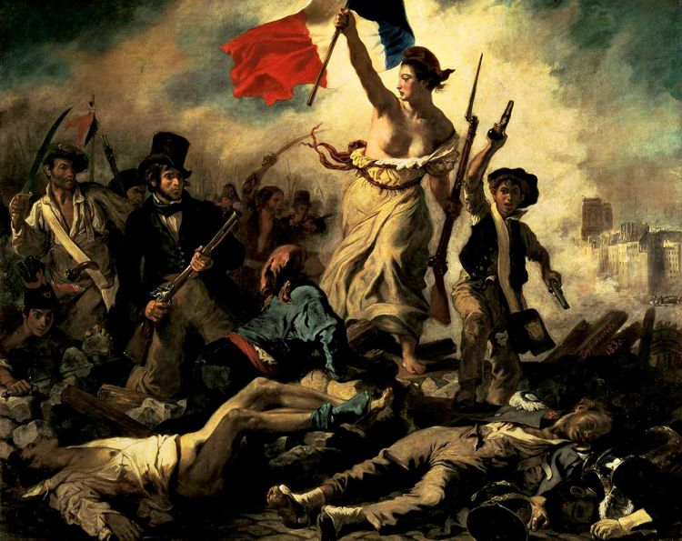

La libertà che guida il popolo di Eugène Delacroix
HOME INFO Desctrizione
La Libertà che guida il popolo raffigura tutte le classi sociali unite in lotta contro l'oppressore, guidate dalla personificazione speciale della Francia, Marianne, che in quest'opera assurge anche a simbolo della Libertà. Marianne è colta nell'attimo in cui avanza sicura sulla barricata, sventolando con la mano destra il Tricolore francese (richiamando con evidenza i valori della rivoluzione del 1789) e impugnando con la sinistra un fucile con baionetta, a suggerire la sua diretta partecipazione alla battaglia. Indossa abiti contemporanei e anche un berretto frigio, assunto come simbolo dell’idea repubblicana dai rivoluzionari già nel 1789, ha il seno scoperto e i piedi nudi ed è realistica sino alla peluria sotto le ascelle, particolare che non fu apprezzato dai contemporanei. Nella sua posa monumentale e impetuosa la Libertà esorta il popolo a seguirla e a ribellarsi contro la politica reazionaria di Carlo X.